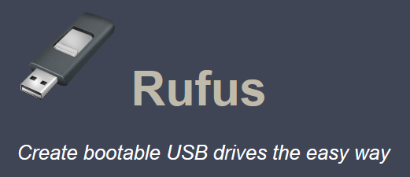
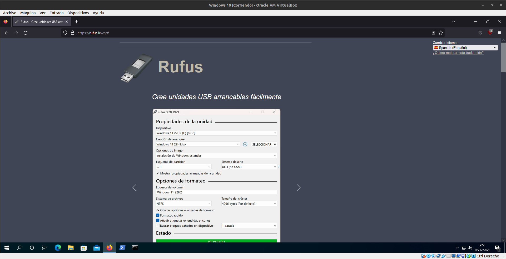
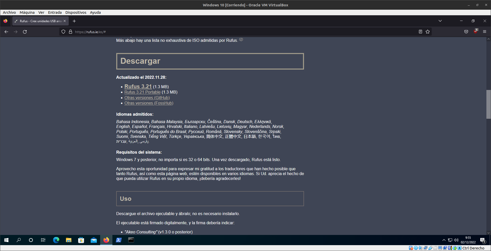
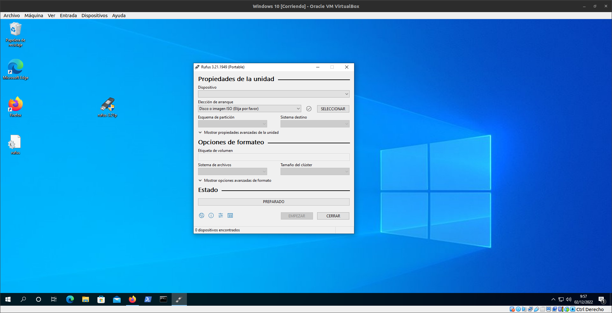

Rufus

Rufus es una aplicación portable, libre y de código abierto para Microsoft Windows que se puede usar para formatear y
crear unidades flash USB de arranque o Live USB. Está desarrollado por Pete Batard de Akeo Consulting

Para descargar Rufus entraremos en su pagina oficial

Y seleccionaremos la edicion portable para descargarlo

Una vez que se haya descargado lo abriremos y aqui podremos configurar y crear nuestros pendrives de arranque con el S.O que mas te guste.